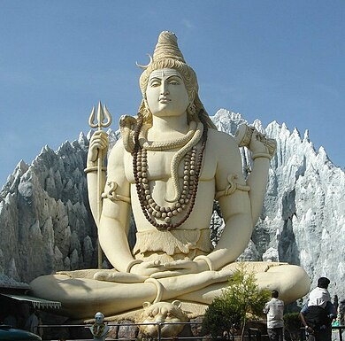

YOGA
YOGA
DIFINITION
Yoga (/ˈjoʊɡə/ ⓘ;[1] Sanskrit: योग, lit. 'yoke' or 'union' pronounced [joːɡɐ]) is a group of
physical, mental, and spiritual practices or disciplines which originated in ancient India and aim
to control (yoke) and still the mind, recognizing a detached witness-consciousness untouched
by the mind (Chitta) and mundane suffering (Duḥkha). There is a wide variety of schools of yoga, practices,
and goals[2] in Hinduism, Buddhism, and Jainism,[3][4][5] and traditional and modern yoga is practiced worldwide

Uttam Kumar
Uttam Kumar
Uttam Kumar
Uttam Kumar